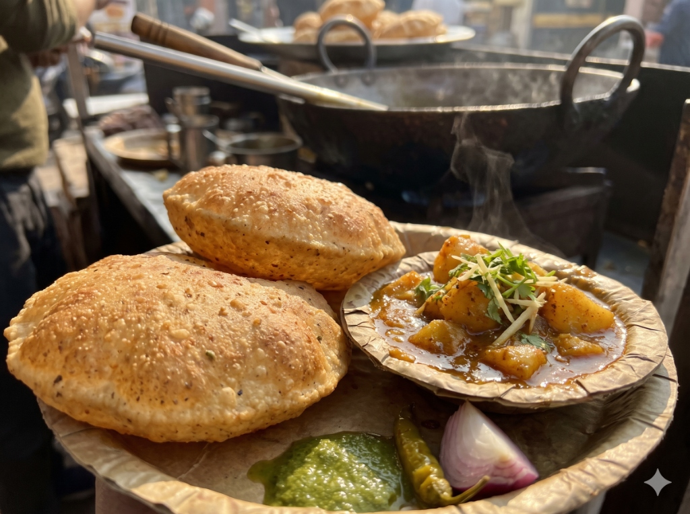
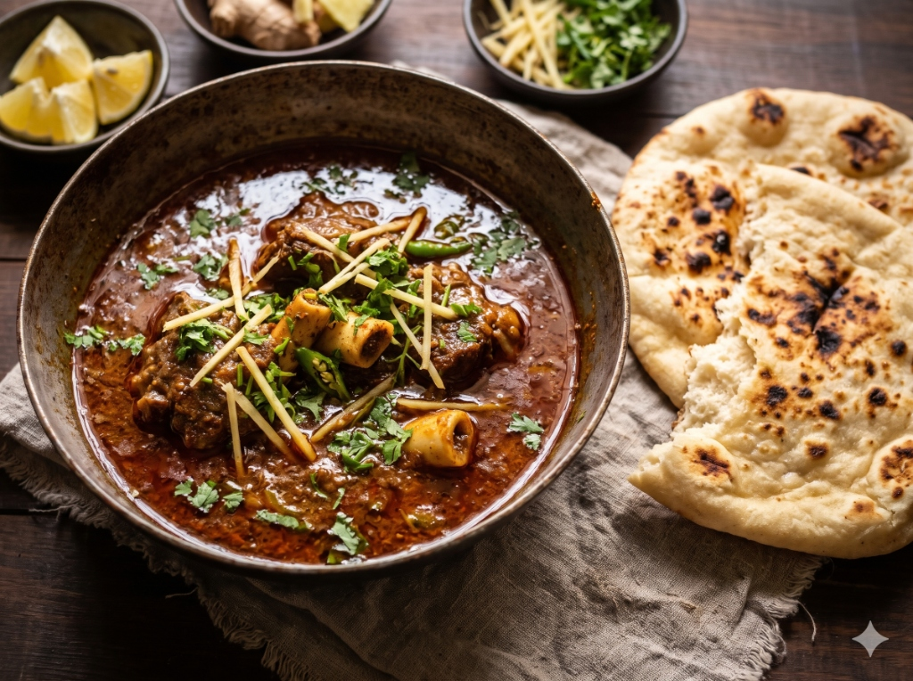
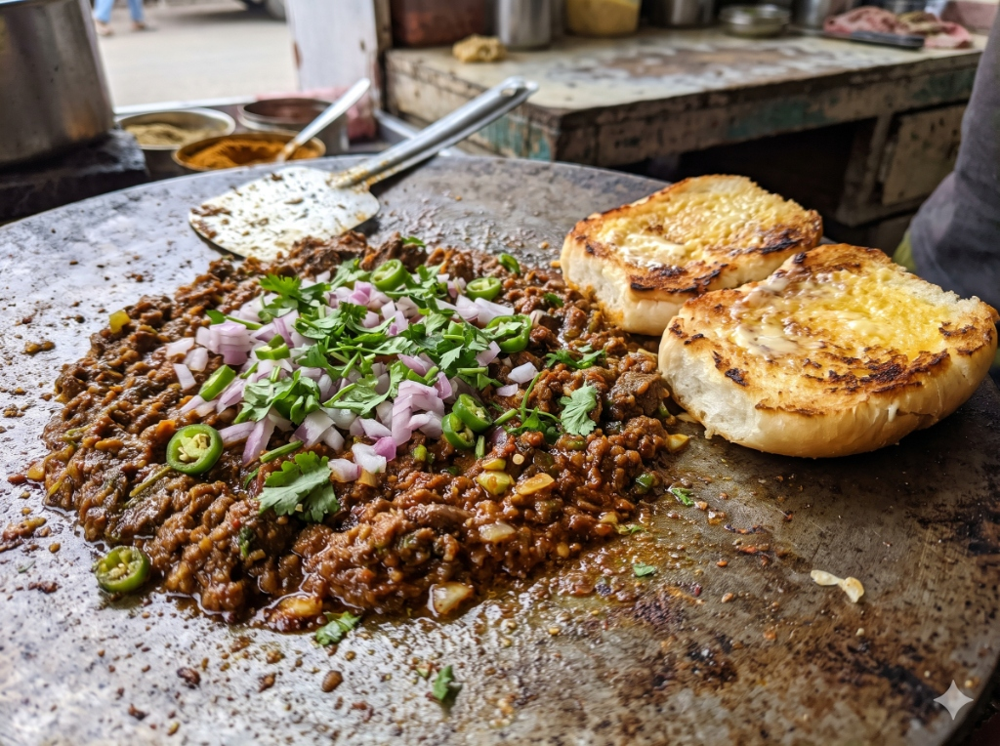
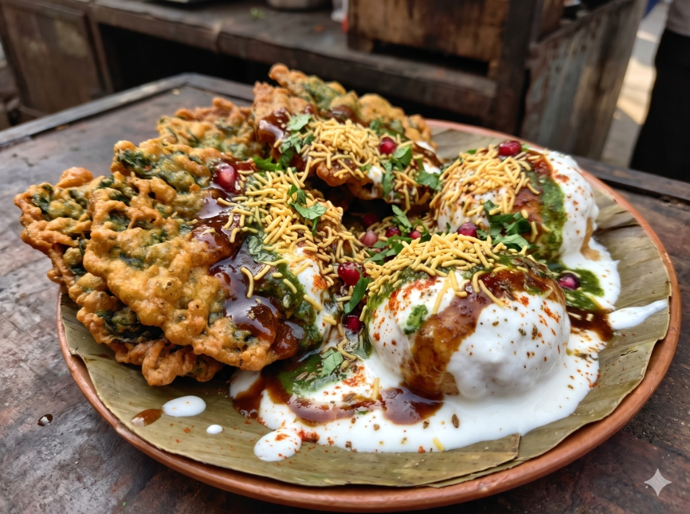
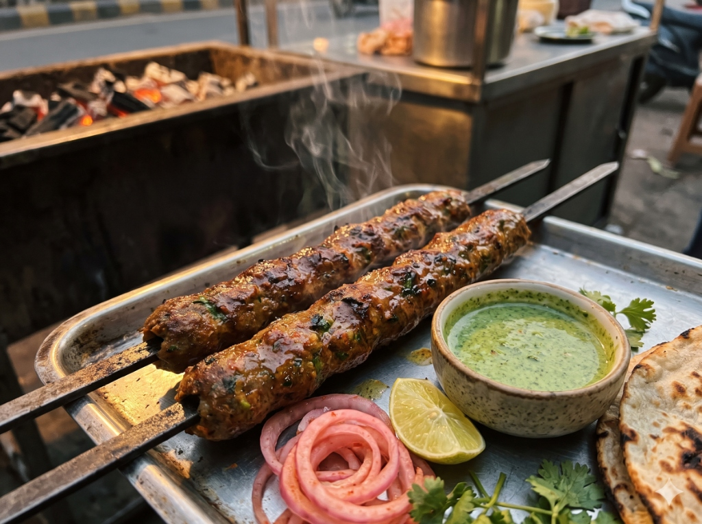
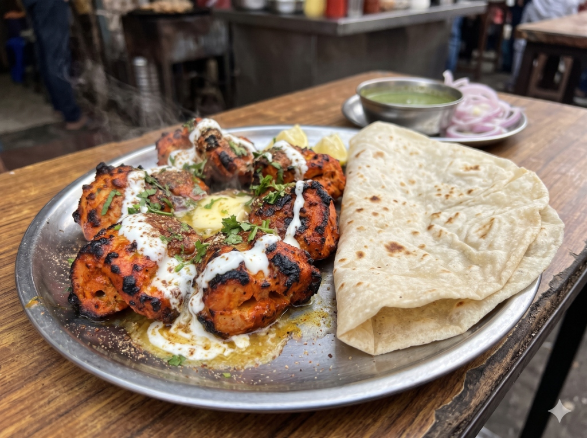
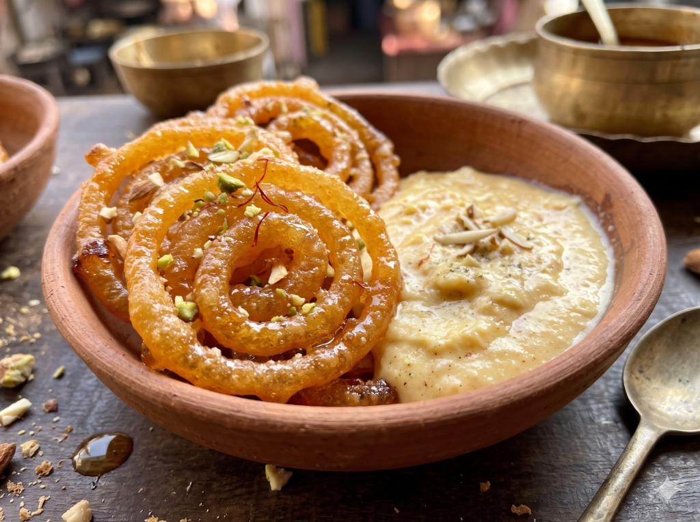
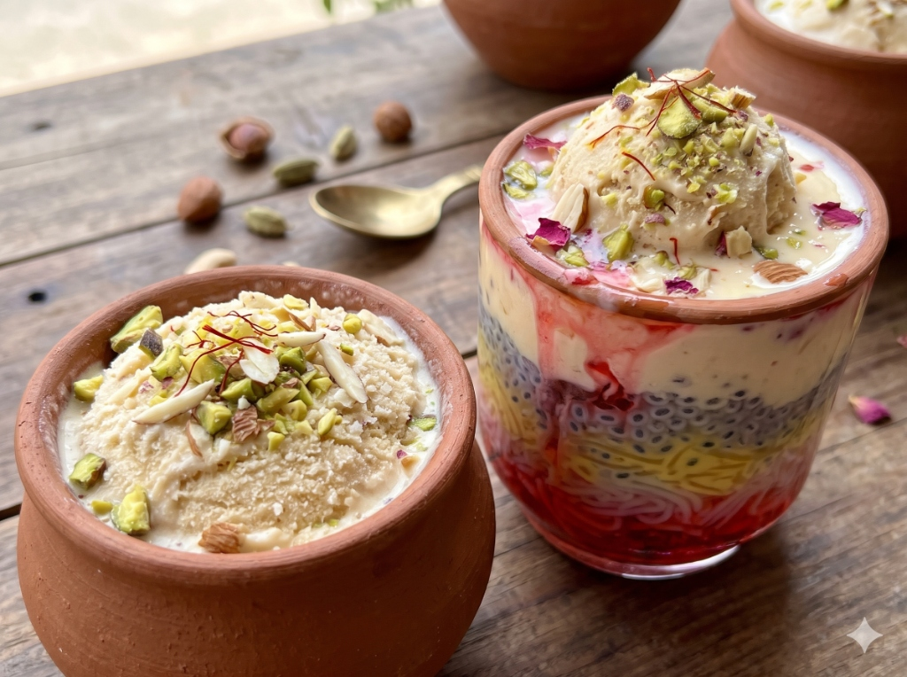

Haji Abdul Nihari
Since 1954
Bade Miyan Keema
Since 1966
Lala's Chaat Corner
Since 1962
Qureshi Kebab Point
Since 1971
Aslam Chicken Corner
Since 1984
Kallu Mal Jalebi Wala
Since 1925
Giani's Matka Kulfi
Since 1939Walking Tour Schedule & Route Overview
Plan your culinary walk by best tasting windows, starting landmarks, and distance.
| Curated Trail | Best Window | Starting Landmark | Walking Distance | Est. Budget |
|---|---|---|---|---|
| Old City Breakfast Trail | 07:30 AM – 10:30 AM | Clock Tower Chowk | 1.4 km (35 mins walk) | ₹150 – ₹300 |
| Evening Street Chaat Trail | 05:00 PM – 08:30 PM | Bazaar Gate West | 1.8 km (45 mins walk) | ₹150 – ₹250 |
| Legendary Sweets & Desserts Walk | 08:00 PM – 10:30 PM | Heritage Sweet Lane | 1.1 km (25 mins walk) | ₹100 – ₹220 |
Nominate a Hidden Street Food Gem
Know a legendary local stall? Submit its details to be reviewed for our next trail update.